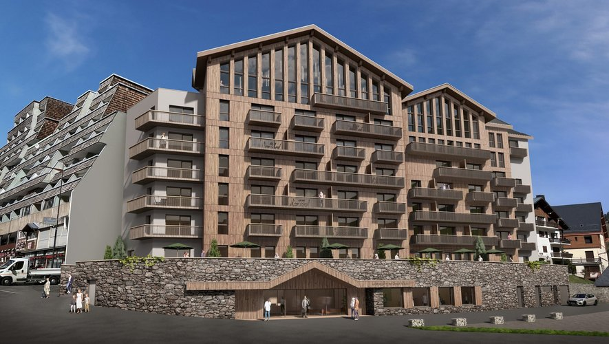
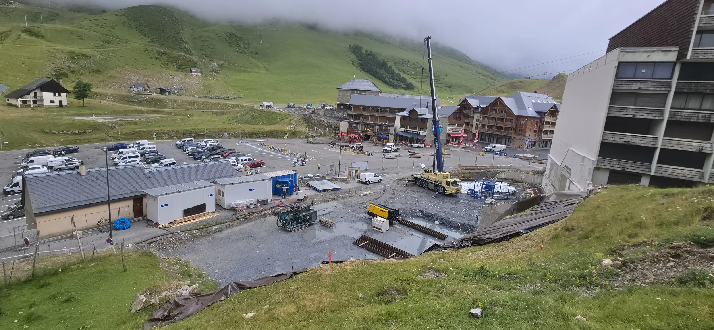
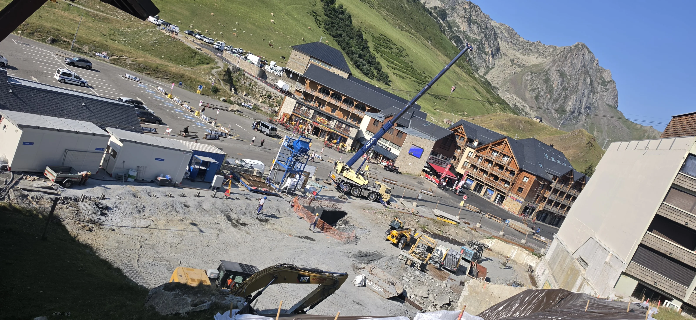
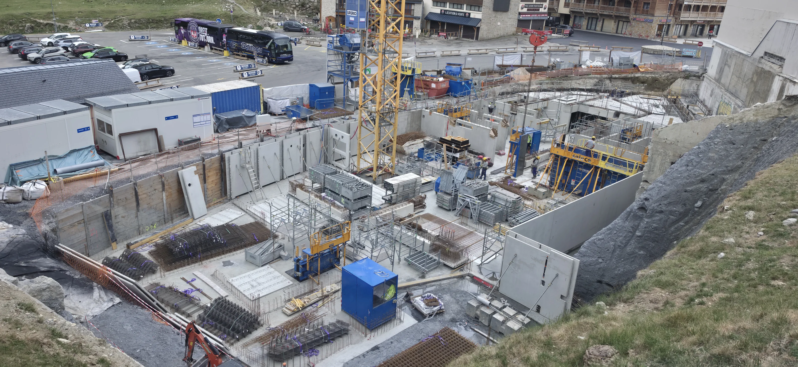

Dernière mise à jour—
Suivi de construction · 2026
Complexe hôtelier 4★+
Domaine de La Mongie
Suivez en images l'évolution du futur complexe hôtelier grâce aux reportages réalisés directement sur le chantier. Explorez les photographies, les timelapses et les vues à 360° au fil de l'avancement.

 360°
Immersion chantier
7 points de vue
Explorer →
360°
Immersion chantier
7 points de vue
Explorer →
Timelapses à 360° · 7 septembre 2026
Le chantier en mouvement
Deux séquences pour observer l'activité du chantier en accéléré. Lancez la lecture, puis glissez dans l'image pour regarder autour de vous.
Chargement des timelapses…
Lecture du chantier
Les étapes documentées
Quatre familles de travaux illustrées par les photographies du terrain, de juin à septembre 2026.
Archives terrain
Explorer les travaux documentés
Les dates visibles dans les médias correspondent uniquement aux dates des reportages réalisés sur le terrain.
Lecture du suivi
Classement photographique indicatif, sans certification d’avancement, de conformité ni de fin de travaux. Un reportage peut illustrer plusieurs étapes.
Archives terrain
Le chantier, reportage après reportage
Parcourez les relevés photographiques réalisés sur le terrain. Chaque date ouvre un reportage complet, sans interprétation de l’avancement ni comparaison au planning.
—
reportages
—
photos
—
période documentée
Chargement…
—
photos
Aucun média sélectionné
Sélection · 7 points de vue
Immersion 360°
Une sélection des vues les plus représentatives du relevé Insta360 du 3 septembre 2026.
Photo Sphere Viewer · Dual Fisheye
Impossible d’afficher cette vue
Vous pouvez sélectionner un autre point de vue.
12 relevés · même point de vue
Évolution du chantier
Du 29 juin au 30 septembre 2026, douze prises de vue réalisées depuis un angle similaire permettent de parcourir visuellement la transformation du chantier, date après date.
Cliquez sur « Voir l’évolution » pour lancer le diaporama en plein écran.


Relevé photographique
29 juin 2026
1 / 12

12 relevés, un même point de vue
Cliquez sur une date pour vous y arrêter.
Ce module restitue uniquement l’état visuel du chantier à chaque date de prise de vue. Il ne constitue ni une mesure d’avancement ni une comparaison au planning prévisionnel.
Le projet
Un journal visuel pensé pour durer
Ce site documente la construction du complexe hôtelier à partir des reportages réellement réalisés sur le terrain. Les premières archives intégrées couvrent cinq relevés photographiques de juillet 2026.
À la livraison, l'ensemble constituera une archive complète du chantier et pourra être transformé en rétrospective « de la première pierre à l'ouverture ».